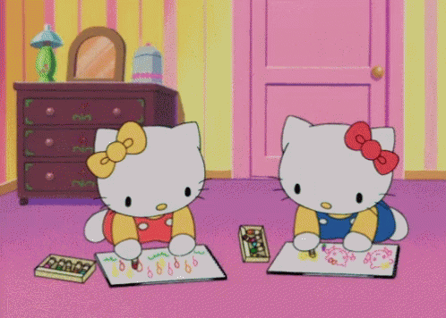
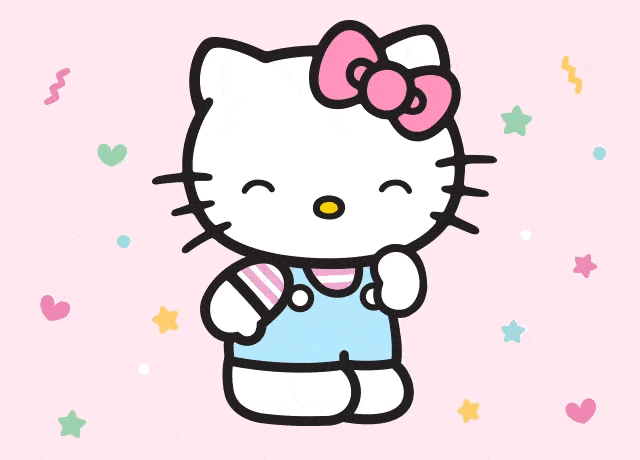

A hello Kitty nasceu no dia 1º de Novembro e se chama Kitty White, ela mora em Londres, na Inglaterra com seu pai Jorge, sua mãe Marry, e sua irmã gêmea, a Mimi. No mundo da Hello Kitty tudo é medido em maçãs. A hello Kitty tem aproximadamente 5 maças de altura e pesa o equivalente à 3 maçãs. A Hello Kitty ama viajar, e seu sonho é ser uma grande pianista. Sua comida favorita é a torta de maçã da mamãe. No seu tempo livre a Hello Kitty adora ouvir música, ler livros, e jogar seu esporte favorito, que é tênis! A Hello Kitty adora estudar e suas matérias favoritas são Inglês e Artes. Hello Kitty está sempre cercada por seus amigos, pois seu lema é: Nunca é de mais ter muitos amigos!
Criada em 1974 por uma designer da empresa Sanrio, a Hello Kitty nasceu no dia 1º de Novembro, após um período de guerra e caos no Japão. Sua missão principal é promover felicidade e incentivar a amizade entre as pessoas. Assim como os demais personagens criados pela empresa, a Hello Kitty então representa a busca por um mundo melhor, especialmente através da sua fofura que inspira amor e afeto e de seu lacinho que simboliza a junção de dois corações.
